효율성과 혁신을 바탕으로
새로운 길을 만들어 가는 개발자
🧑🎓 강태은 (Kang Tae Eun)
📨 yellowaholotle@gmail.com
💻 Blue-Leaf-vm
Portfolio
경력
교내 음악 추천 서비스 운영｜2024.04. ~ 2025.02.
교내 웹 클론 대회 출품｜2025.07.
전공동아리 “아라” 활동｜2025.09. ~ 2025.11
하람 제작 및 운영｜2025.10. ~ 2026.12
수상 내역
한국 정보올림피아드 고등부 장려상｜2025
ICT어워드코리아 창의와 코딩 장려상｜2025
전국 ICT 창의성대회 은상, 대상｜2025
교내 웹 클론 대회 최우수상｜2025
Project
BSNSBS (교내 음악 추천 서비스)
중학교 시절 급식 시간마다 음악을 틀어주는 서비스가 있었습니다. 하지만 음악을 신청하는 방식이 방송실 앞 칠판에 글을 쓰는 것이었다는 불편함이 있었습니다. 게다가 누군가가 신청한 내용을 지워버리는 일도 자주 있었죠. 그래서 '인터넷에서 신청을 받는다면 문제 없지 않을까?' 해서 제작하게 되었습니다. 제작은 node.js와 express, session, socket 등의 모듈로 제작하였습니다. 2024년 4월, 공식적으로 운영을 시작하여 동년 12월까지 운영하였습니다. 그 동안 많은 피드백을 받으며 수정하고, 운영 막바지엔 사이트 디자인 수정도 있었습니다. 개발 중 세션과 웹소켓 연동이 잘 되지 않아 어려웠지만 많은 검색을 통해 세션 미들웨어를 웹소켓 연결 이벤트에 삽입하는 방식으로 해결하였습니다.
Preview
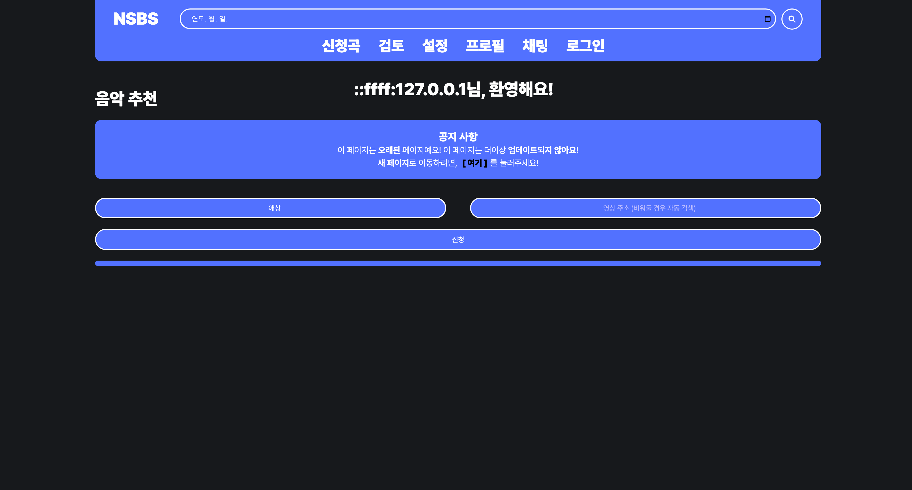
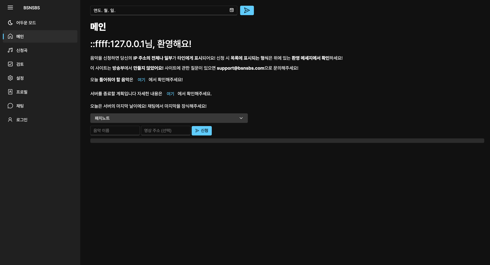
노래방 웹 클론
Repository (TJ미디어 측 요청으로 게시 불가)평소 관심있던 노래방을 웹으로 구현해보고 싶은 마음에 시작하게 된 프로젝트입니다.
HTML, CSS, JS만으로 구현하였으며, TJ 2시리즈 반주기에서 UI를 클론해 제작하였습니다.
제작 과정 중 마디 점프 기능과 재생 딜레이가 가장 문제였으나 각각 계산식 수정, 보정 시간 계산 등을 통하여
해결하였습니다. 또한 현재도 새로운 기능 추가 및 수정을 통하여 더욱 진짜같은 모습에 다가가는 중입니다.
해당 성과(및 반주기 리소스 사용 부분)가 TJ미디어 측에도 전달되어
겨울 방학 중 TJ미디어 본사에 초청되어 사내 견학을 하기도 하였습니다.
Preview
미니 (디스코드 미니게임 봇)
Invite Bot디스코드에서 간단하게 즐길 수 있는 미니게임 봇을 만들어보자는 목표로 시작하게 된 프로젝트입니다.
Node.js로 개발하였으며, 초반엔 봇과 즐길 수 있는 콘셉트로 제작되어, 가위바위보 게임을 제작했습니다.
하지만 사람들끼리 즐길 수 있는 미니게임이 중요하다고 생각하여, 현재의 프로젝트가 되었습니다.
가장 먼저 만든 게임은 “러시안 룰렛”으로, 사람들이 순서대로 돌아가며 총을 쏘는 게임이었습니다.
본인의 차례에서 총이 발사되면 탈락하는 방식의 게임이고, 이 게임을 기반으로 폭탄돌리기,
업다운, 돌 뺏기, 색 맞추기, 타자 대결과 같은 게임들도 제작되었습니다.
현재는 17개 서버(Discord 제공 데이터에서 확인)에서 사용되는 중입니다.
Preview
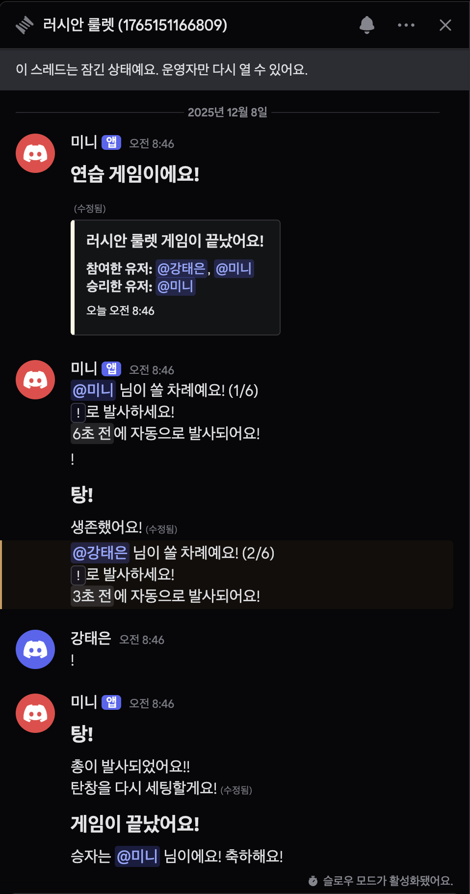
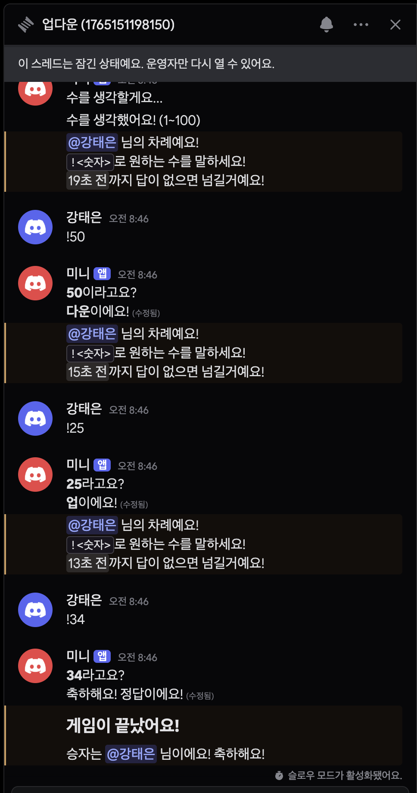
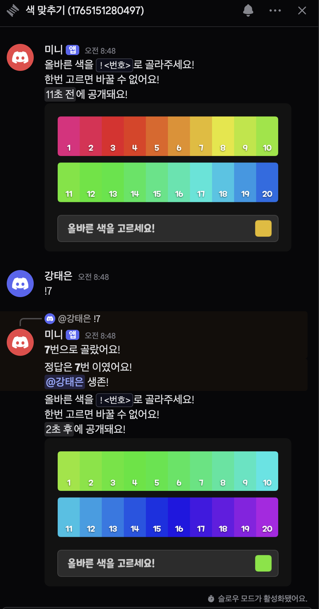
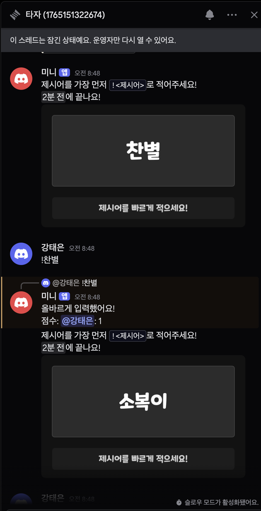
반말 & 존댓말 감지 AI
Colab ipynb인공지능 일반 과목 AI 제작 수행평가를 위해 AI를 제작하였습니다.
인터넷에선 아무리 공적인 장소여도 일방적으로 반말을 쓰는 모습이 많이 보입니다.
그래서 이 점을 지적하고 자동적으로 분류하여 간편한 관리를 하기 위해 제작하였습니다.
korean smile style dataset을 사용하여 여러 문체를 반말, 존댓말로 구분하여 학습시켰습니다.
아무리 학습을 시켜도 꼬인 말(이모티콘을 붙이거나 말 끝에만 요를 쓰는 등)에 경우
제대로 반응하지 못하는 문제가 있었습니다. 하지만 전처리 과정에서 이모티콘을 무시하고 추임새를 추가로
학습시키며 일부 해결하였습니다.
Preview
너무 웃겨요 ㅋㅋ - 존댓말 (0.9991)
혹시 내일 시간 괜찮아? - 반말 (0.9997)
행복해요 (^^) - 존댓말 (0.9993)
머리부터 발끝까지 다 사랑스러워 - 반말 (0.9997)
머리부터 발끝까지 다 사랑스러워요 - 존댓말 (0.9992)
너 뭐야요 - 존댓말 (0.9988)
저번에 교수님께서 자료 가져오라고 하셨는데 기억 나? - 반말 (0.9995)
안녕하세용 반가워용 ㅎㅎ - 존댓말 (0.8977)
안녕 반가워 ㅎㅎ - 반말 (0.9997)
안녕하세?요 - 존댓말 (0.9993)
안?녕 - 반말 (0.9996)
만나서 반갑습니다 - 존댓말 (0.9989)
Haram (동계 해커톤 운영 시스템)
Backend Repository전공동아리 '아라'에서 진행한 인턴 프로젝트로 동계 해커톤 운영 시스템을 개발하였습니다.
팀원과의 역할을 나눠 개발하였으며, 전 백엔드 개발을 하였습니다.
짧은 개발 기간 + 시험 기간임에도 불구하고 팀원 모두 최대한 노력하여 사용이 가능한 수준으로 완성되었습니다.
동계 해커톤에서 완성되지 않은 기능은 제거 후 사용하였던 점이 아쉬웠으며,
다행히 운영 도중 치명적인 오류가 발생하지 않아 다행이라는 생각도 들었습니다.
Preview
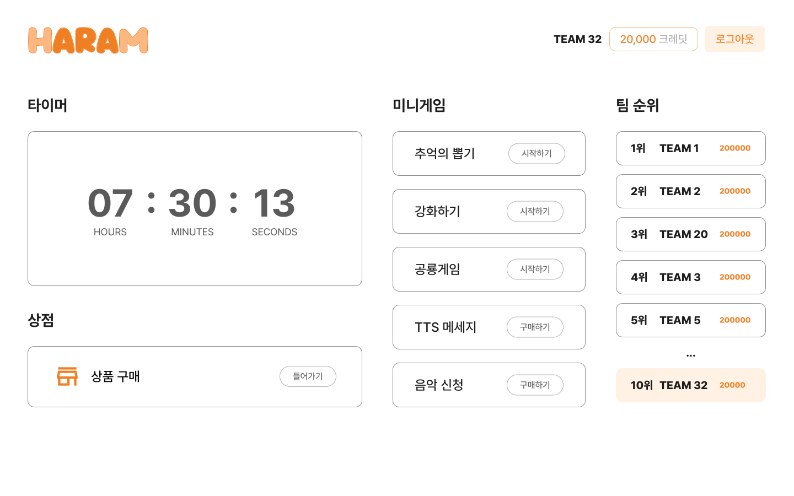
브라우저 홈페이지
Repository Page네이버 웨일 브라우저를 사용하다 최적화 문제로 인해 Mozilla의 Firefox로 넘어갔습니다.
하지만 Firefox의 메인 페이지 디자인이 예쁘지 않아, 나만의 페이지를 만들자라는 생각에 개발을 시작하였습니다.
기초적인 기능을 제작한 후 지인에게 해당 서비스를 공유하여 사용하게 하였으며
같이 사용하고 의논하면서 사용자의 입장으로 기능을 추가하였습니다.
또한 지인도 풀 리퀘스트를 보내는 등 활발한 수정 작업이 이루어 졌습니다.
네이버 웨일 브라우저의 메인 페이지를 참고하였으며, 표준을 준수하는 브라우저라면 사용할 수 있도록 제작되었습니다.
설정에서 원하는 이미지를 랜덤으로 표시하게 하는 등 다양한 설정을 통해 나만의 메인 페이지를 만들 수 있게 됩니다.
Preview
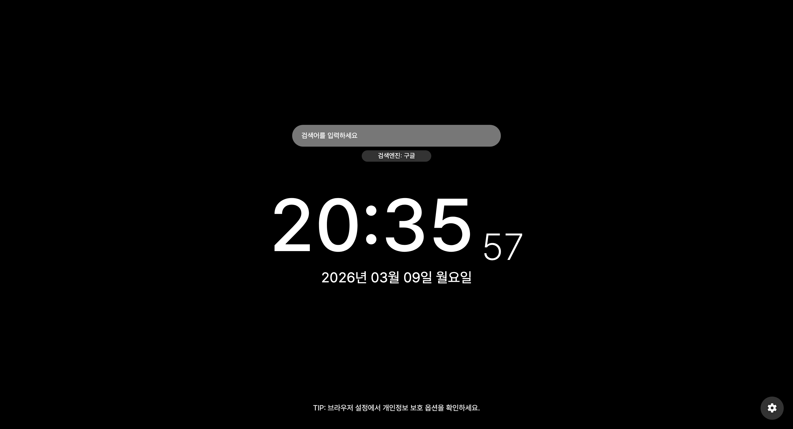
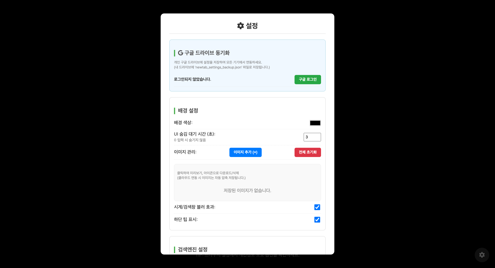
제비뽑기 웹 사이트
Page1학년 사회 수업 도중 사회 선생님께서 선배님이 만들었다며 보여주신
조 뽑기 사이트를 보면서 '나도 만들면 잘 만들 수 있겠는데?' 라는 생각이 들어서 만들게 되었습니다.
기존 목표였던 제비를 두고 뽑는다. 로 제작하였으나 부족하다고 느껴 조 뽑기에 어울리도록
제비 수와 관계 없이 나올 수 있는 최대 수를 지정할 수 있는 기능도 만들었습니다.
해당 기능의 추가로 16명이 4조를 구성할 수 있고, 자리 뽑기에서도 사용할 수 있는 등 다용도의 역할을 하게 되었습니다.
Preview
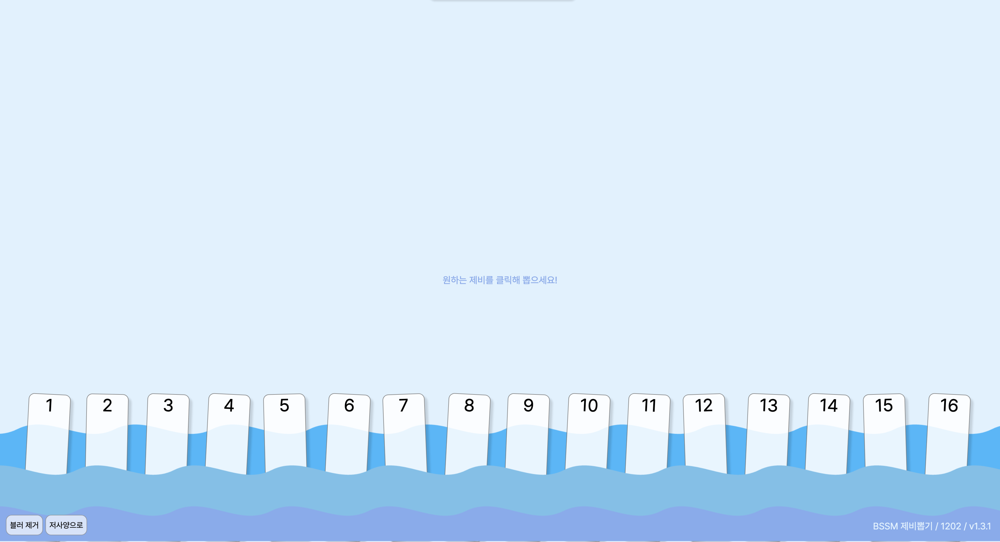
부냥이 (BSSM 디스코드 봇)
BSSM 2학년 2반 디스코드 전용 봇1학년 시절, 학급 디스코드 서버의 효율적인 운영을 위해 NEIS Open API 기반의 정보 조회 봇을 개발했습니다. 초기에는 급식과 시간표 알림에 집중했으나, 학교 시스템에 집중할 수 있도록 학사 일정, 회고 알림, 소등 알림 등 기능을 확장하며 학급의 필수 도구로 정착시켰습니다. 이러한 운영 성과를 통해, 2학년 때는 담임 선생님의 요청으로 학급 공식 서버를 제작하여 봇을 투입하게 되었습니다. 특히 영어 단어 시험 연습을 위해 Canvas 라이브러리를 도입, 영어 단어 시험 데이터를 구한 후 이를 무작위로 섞거나 정답을 표시하는 등 다양한 형태의 이미지로 생성하는 '모의 시험지 제작 기능'을 개발했습니다. 단순한 모의시험이 아닌 Canvas를 활용한 데이터 시각화를 통해 실제 시험지와 비슷한 환경을 제공하는 경험을 했습니다. 현재는 시간표 데이터를 이미지 시간표로 변환하는 기능을 추가하며 UX 개선에 집중하고 있습니다. (이 봇을 박지혜 선생님께서 매우 좋아하십니다)
Preview
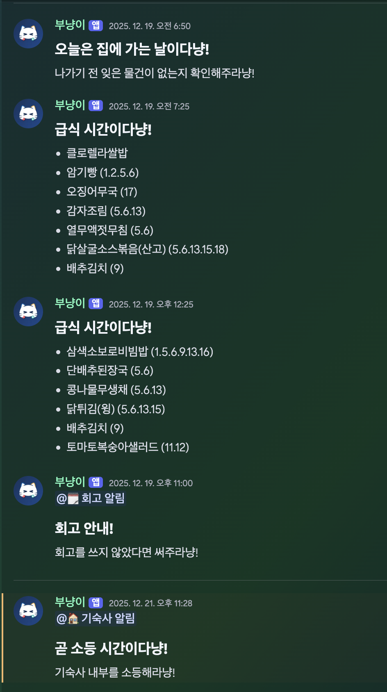
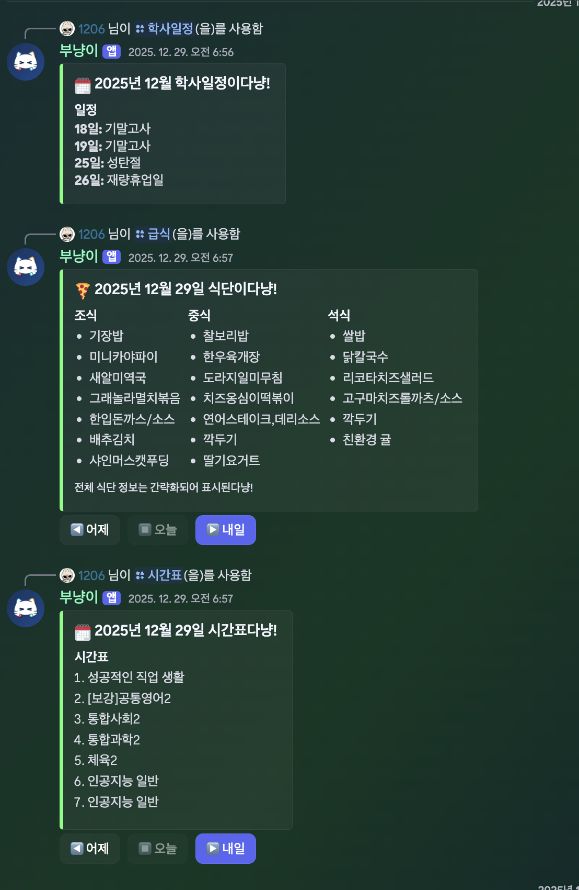
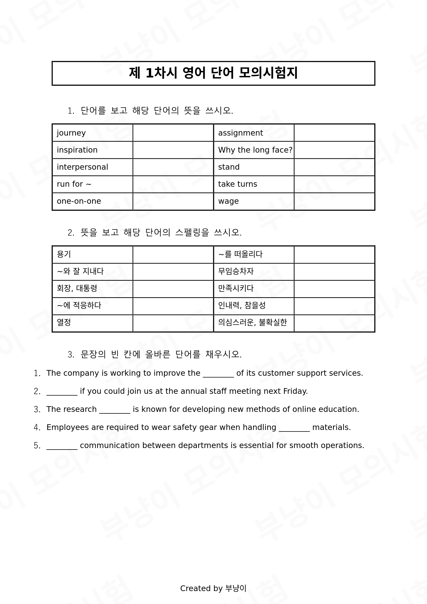